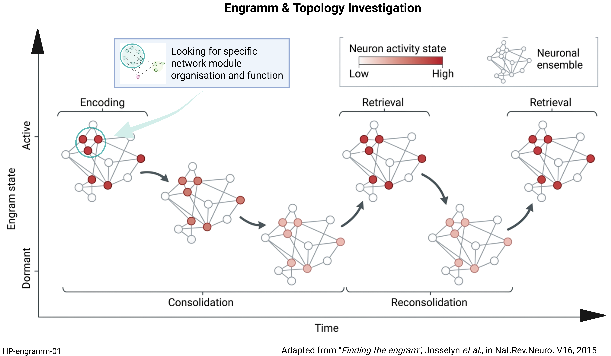

What is an engram?
An engram is the physical trace of a memory in the brain. It consists of lasting changes in a group of neurons and their connections that occur when an experience is learned. Reactivating this network can help recall the memory.
